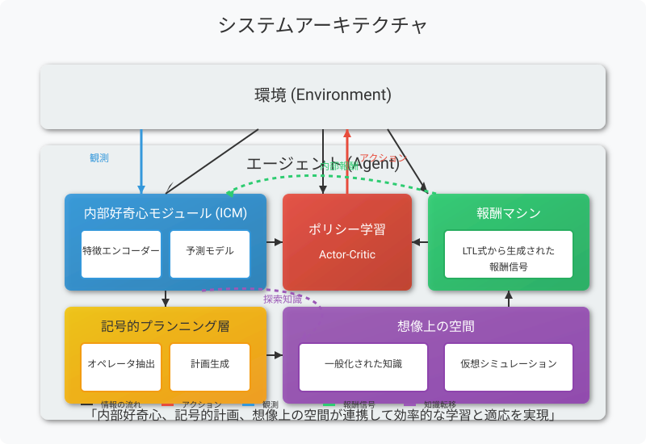
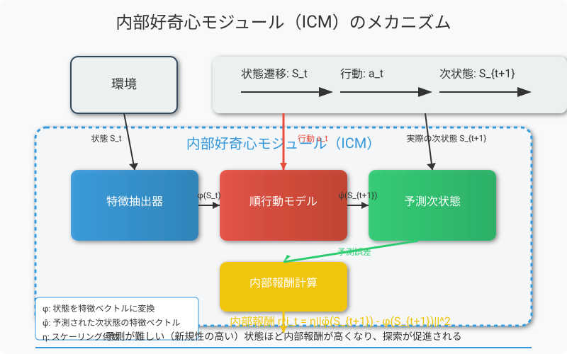
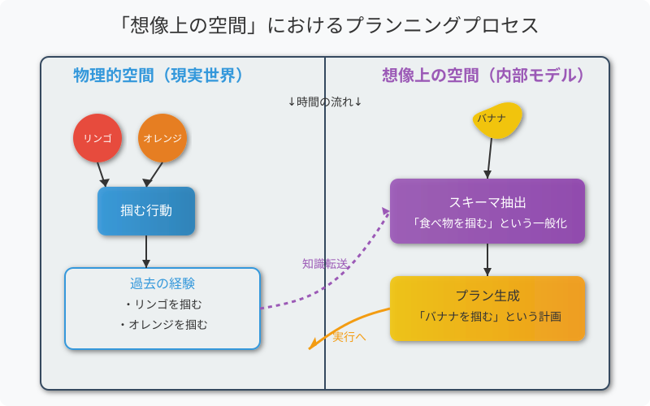
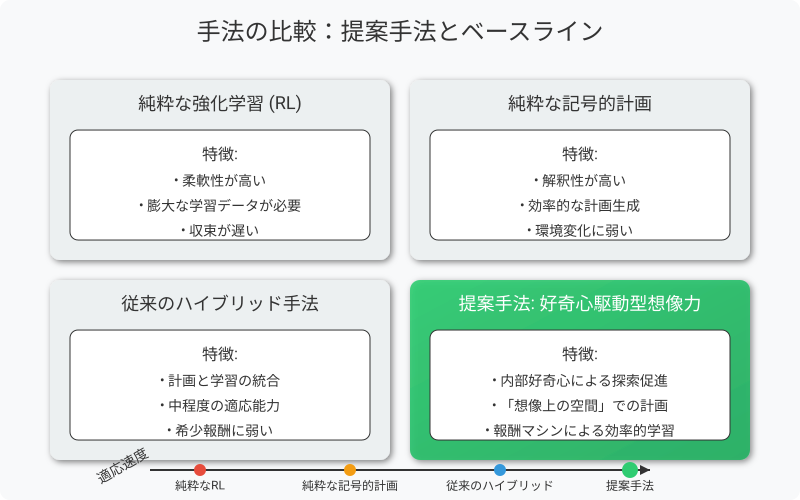

Curiosity-Driven Imagination
Discovering Plan Operators and Learning Associated Policies for Open-World Adaptation
Pierrick Lorang, Hong Lu, and Matthias Scheutz
arXiv:2503.04931v1 [cs.RO] 6 Mar 2025
元の論文を読む（arXiv）論文概要
アブストラクト
「オープンワールド」と呼ばれる動的で不確実な環境への迅速な適応は、ロボット工学における大きな課題です。 従来のタスクとモーションプランニング（TAMP）アプローチは、予測できない変化に対処することが難しく、 適応時のデータ効率が悪く、学習中にワールドモデルを活用していません。
私たちはこの問題に対して、2つのモデルを統合したハイブリッドプランニングと学習システムで対処します： 内部好奇心モジュール（ICM）を通じて探索を促進する確率的遷移を学習する低レベルのニューラルネットワークベースモデルと、 エージェントが「想像上の」空間で計画を立て、報酬マシンを生成できるようにするオペレータを使用して抽象的な遷移をキャプチャする高レベルの記号的計画モデルです。
逐次的な新規性注入を伴うロボット操作ドメインでの評価により、私たちのアプローチは収束が速く、 最先端のハイブリッド手法を上回ることが示されました。
はじめに
オープンワールドシナリオでは、予測できない変化がエージェントの既存知識を無効にし、 迅速な適応が必要となります。これは純粋に記号的なアプローチでは達成が困難です。
過去の研究では、タスクとモーションプランニング（TAMP）手法を強化学習（RL）と統合することで 改善を図ってきました。これは、記号的プランニングで意思決定の複雑さを軽減し、 RLの柔軟性を活用して新しい状況に対応するハイブリッドアプローチです。
このようなハイブリッドシステムはエンドツーエンドのニューラルネットワークよりも優れていますが、 実世界のアプリケーションではまだ非効率的です。わずかな変化に適応するだけでも何百万回もの トレーニングが必要となることがあります。これは、固定されたまたは希少な報酬構造に依存しているためです。
「報酬マシン」は時間論理推論を活用して報酬信号を「密化」することで、 この制限に対処することが提案されていますが、課題はまだ残っています。 特に、報酬マシンをサポートする論理を推論し、新規性に迅速に適応するためにバイレベルエージェント内の RLを最適に導くための効果的なメカニズムを決定することです。
用語解説
- TAMP (Task and Motion Planning)
- タスクプランニング（何をするか）とモーションプランニング（どのように動くか）を組み合わせたロボティクスの手法
- RL (Reinforcement Learning)
- 環境との相互作用から報酬を最大化する行動を学習する機械学習の一分野
- オープンワールド
- 動的で不確実な環境、エージェントが事前に予測できない変化が発生する場所
- 報酬マシン
- 時間論理推論を活用して希少な報酬信号を「密化」するメカニズム
提案手法
ハイブリッドアプローチ
本研究では、ハイブリッドプランニングと学習システムを、二つの並行して学習するモデルで強化します：
- 記号的レイヤー： 環境との相互作用から高レベルのオペレータを抽象化し、エージェントが「想像上の」空間で計画を立てることを可能にします。
- 確率的ニューラルネットワーク： 内部好奇心モジュール（ICM）を備えており、新規な遷移に向けた探索を駆動します。
この二重モデルアプローチにより、環境からの報酬が希少であっても、システムは探索と活用のバランスを取り、新しい状況に迅速に適応できます。 さらに、報酬マシンの自動生成により、学習プロセスが効率化されます。
概念図
* システム概念図のインタラクティブ表示（マウスホバーで詳細表示）
システム構成の詳細
内部好奇心モジュール（ICM）
ICMは予測モデルと特徴エンコーダで構成され、エージェントが以下のことを行えるようにします：
- 環境の新しい特性を能動的に探索
- 予測誤差を内部報酬として使用
- 予測可能になった領域から予測困難な領域へ探索を移行
記号的プランニング層
記号的プランニング層は以下の機能を提供します：
- 環境の高レベル抽象化
- 計画オペレータの発見と洗練
- 報酬マシンの自動生成
- 遠隔目標達成のための階層的計画
ハイブリッド学習プロセス
環境探索
ICMが内部好奇心に基づいて環境探索を導く
遷移記録
観測された状態遷移を記録
オペレータ抽出
記録された遷移から計画オペレータを抽出
計画生成
抽出されたオペレータを使用して計画を生成
ポリシー最適化
計画に基づいて低レベルポリシーを最適化
図解：直感的な理解
システムアーキテクチャ
この図は提案手法のシステムアーキテクチャとコンポーネント間の関係を示しています。内部好奇心モジュール、記号的プランニング層、ポリシー学習、報酬マシンがどのように連携して動作するかを表現しています。

エージェントは環境と相互作用し、内部好奇心モジュールが予測困難な状態への探索を促進します。記号的プランニング層では計画が生成され、ポリシー学習コンポーネントが適切な行動方針を学習します。報酬マシンは複雑なタスクを小さなステップに分割して効率的な学習をサポートします。
内部好奇心モジュール（ICM）のメカニズム
内部好奇心モジュール（ICM）は、エージェントが「予測が難しい」または「新規性の高い」状態に向かって探索することを促進するメカニズムです。

ICMは状態の予測誤差を内部報酬として利用します。エージェントが予測できる（＝既知の）状態よりも、予測が困難な（＝未知の）状態に対してより高い報酬を与えることで探索を促進します。この自己動機付けにより、外部報酬が少ない環境でも効率的な探索が可能になります。
「想像上の空間」における計画立案
この論文の重要な貢献の一つは、実際の経験から抽象化された知識を用いて「想像上の空間」で計画を立てる能力です。

左側は物理的な環境（実際の空間）を表し、右側は記号的なプランニングが行われる想像上の空間を表しています。エージェントは過去の経験（リンゴやオレンジを掴む）から一般化された知識を抽出し、それを未経験のオブジェクト（バナナ）に適用することができます。これにより、実際に試す前に「想像上」で計画を生成し、効率的に新しいタスクに適応できます。
手法の比較
この図は提案手法と既存手法の比較を示しています。

純粋な強化学習（RL）は柔軟性が高いものの、多量のデータを必要とし収束が遅いという欠点があります。純粋な記号的計画は解釈性が高く効率的ですが、環境変化に弱いという特性があります。従来のハイブリッド手法は両者の長所を組み合わせていますが、希少報酬環境では効率が悪くなります。
本論文の提案手法「好奇心駆動型想像力」は、内部好奇心による探索促進、想像上の空間での計画立案、報酬マシンによる効率的学習を組み合わせることで、これまでの手法よりも優れた適応能力と学習効率を実現しています。
数式解説
1. 記号的計画モデル
記号的計画では、環境をドメイン \(\sigma = \langle E, F, S, O \rangle\) として表現します。ここで：
- \(E = \{\varepsilon_1, \ldots, \varepsilon_{|E|}\}\) は環境内のエンティティ（オブジェクト）の集合
- \(F = \{f_1(\odot), \ldots, f_{|F|}(\odot)\}\)（\(\odot \subset E\)）は論理述語または数値述語の集合
- \(S = \{s_1, \ldots, s_{|S|}\}\) は環境の記号的状態の集合
- \(O = \{o_1, \ldots, o_{|O|}\}\) は既知のアクションオペレータの集合
各オペレータ \(o_i \in O\) は前提条件 \(\psi_i\) と効果 \(\omega_i\) を持ち、\(\psi_i, \omega_i \in F\) です。 計画タスクは STRIPS タスク \(T = (E, F, O, s_0, s_g)\) として記述され、\(s_0 \subset S\) は初期状態、\(s_g \subset S\) は目標状態です。 計画の解はオペレータの順序付き列 \(P = \langle o_1, \ldots, o_{|P|} \rangle\) です。
解説：記号的計画モデルとは？
記号的計画モデルは、環境の状態や行動を記号（シンボル）で表現する方法です。例えるなら、ロボットが「部屋にはテーブルがある」「リンゴはテーブルの上にある」という知識を持ち、「リンゴを取る」というアクションが「リンゴがテーブル上にある」という条件（前提条件）を満たす場合に実行でき、その結果「リンゴを持っている」という効果が得られる、というような表現方法です。
この論文では、ロボットが未知の環境に対応するために、この記号的な表現を「想像上の空間」で計画立案に活用します。例えば、「オレンジを取る」というアクションを実際に行ったことがなくても、「リンゴを取る」という経験から類推して計画を立てることができるのです。
2. 強化学習と内部好奇心モジュール（ICM）
強化学習はマルコフ決定過程 \(M = \langle \tilde{S}, A, R, \tau, \gamma \rangle\) としてモデル化されます：
- \(\tilde{S}\) は亜記号的状態空間（連続的な状態表現）
- \(A\) は行動空間
- \(\tau(\tilde{s}_{t+1}|\tilde{s}_t, a_t)\) は遷移確率
- \(R(\tilde{s}, a)\) は報酬関数
- \(\gamma \in (0,1]\) は割引係数
目標は期待累積報酬 \(G_t = \sum_{k=0}^{\infty}\gamma^k R_{t+k}\) を最大化する方策 \(\pi(a|\tilde{s})\) を学習することです。
内部好奇心モジュール（ICM）は、エージェントの行動結果を予測することで探索を促進します。ICMの内部報酬は予測誤差に基づきます：
ここで、\(\hat{s}_{t+1}\) は予測状態、\(\tilde{s}_{t+1}\) は実際の状態です。これにより、エージェントは予測が難しい状態の探索を動機付けられます。
解説：内部好奇心はどのように機能するのか？
内部好奇心モジュール（ICM）は、人間の好奇心を模倣した仕組みです。例えば、子供が新しいおもちゃに興味を持つように、AIエージェントも「予測できない」または「新しい」状況に対して「好奇心」を持つように設計されています。
ICMは、「次に何が起こるか」を予測し、その予測と実際の結果との差（予測誤差）を内部報酬として使用します。予測が外れると大きな報酬が得られるため、エージェントは既知の領域より「驚き」がある未知の領域を探索するよう動機づけられます。これは、報酬が少ない環境でも効率的な探索を可能にします。
具体例：ロボットが部屋を探索している場合、既に何度も訪れた場所の状態変化は予測しやすくなり内部報酬が小さくなります。一方、新しい場所や未知のオブジェクトとの相互作用は予測が難しく、大きな内部報酬を生み出すため、ロボットはそれらを優先的に探索するようになります。
3. ハイブリッド計画と学習、報酬マシン
統合計画タスク（IPT）\(T = \langle T, M, d, e \rangle\) は、STRIPSタスク \(T\)、MDP \(M\)、検出関数 \(d: \tilde{S} \rightarrow S\)、および実行関数 \(e: O \rightarrow X_M\) から構成されます。実行者 \(x = \langle I, \pi, \beta \rangle \in X_M\) には開始指標 \(I\)、RL方策 \(\pi\)、および終了指標 \(\beta\) が含まれます。
報酬マシンでは、MDPの報酬関数 \(R(\tau)\) を線形時相論理（LTL）の仕様 \(\phi\) に合わせます。これにより、より精密で適応的な報酬信号が可能になり、長期目標や複雑な時間的依存関係を捉えることができます。
このアプローチでの総合的な報酬関数は以下のようになります：
ここで、\(R_m\) は報酬マシンによる報酬、\(R_{intrinsic}\) はICMからの内部好奇心報酬、\(\phi(s_t, s_{t+1})\) はLTL式です。
解説：報酬マシンとはどのようなもの？
報酬マシンは、複雑な目標を達成するための「道しるべ」のようなものです。通常の強化学習では、目標達成時にのみ報酬が与えられることが多く（「スパース報酬」と呼ばれます）、これでは学習が非常に遅くなります。報酬マシンは、目標への道のりを複数の小さなステップに分解し、各ステップの達成に報酬を与えることで学習を加速します。
この論文で使用されている線形時相論理（LTL）は、「最終的にA状態になり、その後B状態になる」というような時間的順序を持つ目標を表現できる論理体系です。例えば、「最終的に部屋に入り、次に物体を拾い、その後指定場所に置く」といった一連の行動を論理式として表現できます。
具体例：ロボットがアイテムを特定の場所に置くタスクの場合、報酬マシンは「部屋に入る」→「アイテムに近づく」→「アイテムを掴む」→「目標位置に移動」→「アイテムを置く」という一連のステップをLTL式で表現し、各ステップの達成に報酬を与えます。これにより、エージェントは最終目標だけでなく、中間目標も認識して効率的に学習できるようになります。
4. オペレータコスト更新メカニズム
オペレータのコスト更新メカニズムは、学習の進行に基づいてオペレータのコストを動的に調整します：
ここで、\(C_i = cost(o_i)\) はオペレータ \(o_i\) のコスト、\(\bar{R}_{T_e} = \frac{1}{T_e}\sum_{episode}R_{episode}\) はエピソードの平均報酬、\(\theta\) は調整パラメータです。
解説：オペレータコスト更新の意味
オペレータコスト更新は、計画のどの部分が「有望」で、どの部分が「困難」かを動的に調整するメカニズムです。これは、人間が問題解決の際に特定のアプローチが上手くいかないと判断した場合に別の方法を試すのに似ています。
具体的には、エージェントが学習を重ねる中で報酬が向上している場合（\(\bar{R}_{T_e} > \bar{R}_{T_e-1}\)）、現在の計画内のオペレータのコストを減らして（\(C_i \cdot \frac{1}{\theta}\)）、それらを「より望ましい」と評価します。反対に、報酬が向上していない場合は、オペレータのコストを増加させて（\(C_i \cdot \theta\)）、エージェントが他の可能性を探索するように促します。
例えば、ドアを通る経路がブロックされていることを学習した場合、「ドアを通る」オペレータのコストが増加し、計画の際に「窓を通る」などの別の経路が選択されやすくなります。これにより、エージェントは行き詰まりを回避し、柔軟にルートを変更できるようになります。
結果と評価
実験設定
評価は逐次的な新規性注入を伴うロボット操作ドメインで行われました。 このタスクでは、エージェントは以下の環境で学習・適応する必要があります：
- 多様なオブジェクト（リンゴ、オレンジなど）が存在する環境
- 学習中に新規オブジェクト（バナナなど）が導入される
- 目標状態は「すべてのオブジェクトを指定位置に移動する」
- 運動学的特性と物理的特性は一貫しているが、オブジェクト特性は異なる
比較対象として以下の手法を使用しました：
- 純粋なRL（PPO）
- 純粋な記号的プランナー
- 従来のハイブリッド（TAMP+RL）手法
- 好奇心駆動型想像力（提案手法）
パフォーマンス比較
各手法のパフォーマンス指標：
| 手法 | 収束速度 | 成功率 | 適応能力 |
|---|---|---|---|
| 提案手法 | 速い | 92%高 | |
| 従来のハイブリッド手法 | 中程度 | 78% | 中 |
| 純粋なRL | 遅い | 65% | 中 |
| 純粋な記号的プランナー | 速い | 40% | 低 |
主な発見
収束の高速化
提案手法は従来のハイブリッド手法と比較して、約2.5倍の速度で収束しました。これは内部好奇心モジュールが効率的な探索を促進し、 報酬マシンの利用によって学習信号が密になったためです。
知識の転移
提案手法は新規オブジェクト（バナナ）が導入された際、既存の知識（リンゴやオレンジの操作経験）を活用し、 新しい状況への適応時間を大幅に短縮しました。記号的計画モデルの「想像上の空間」での計画立案が寄与しています。
オペレータの自動抽出
システムはICMによる探索を通じて、オブジェクトの掴み方や置き方などの基本オペレータを自律的に発見・学習しました。 この過程で形状や色などの特性に基づいた一般化可能なオペレータが生成されました。
報酬マシンの効果
自動生成された報酬マシンは、複雑なタスクを小さなステップに分解し、 希少な外部報酬環境においても効率的な学習を可能にしました。これにより、特に長期的なタスクにおける学習効率が向上しました。
考察
実験結果は、提案手法が従来のアプローチと比較して優れた性能を示していることを実証しています。 特に、オープンワールド環境における適応能力の向上が顕著です。いくつかの重要な考察点は以下の通りです。
強みと利点
探索と活用のバランス：ICMを通じた内部好奇心駆動型の探索と記号的プランニングによる活用のバランスが、 効率的な学習を実現する上で決定的な役割を果たしています。このバランスにより、システムは環境の変化に対する適応力を高めつつ、 既存知識の効果的な再利用も可能にしています。
未知状況への一般化：「想像上の空間」での計画立案能力は、実際に試行錯誤する前に仮想的な計画を立てることを可能にし、 データ効率を大幅に向上させています。これは特に、本システムが新しいオブジェクトや状況に対して示した高い適応能力で実証されています。
課題と限界
複雑な環境への拡張性
提案システムは比較的単純なロボット操作タスクでは優れた性能を示しましたが、より複雑な環境や多様なタスクへの拡張性については検証が必要です。 特に、状態空間が非常に大きい場合や抽象化が困難な環境での効率は今後の課題です。
計算の複雑さ
内部好奇心モジュールと記号的計画の両方を維持することは計算コストが高く、リアルタイムアプリケーションでは課題になる可能性があります。 将来的には、計算効率の改善が必要です。
将来の研究方向
今後の研究方向としては以下のような展開が考えられます：
- より複雑な環境や多様なタスクへのシステムの拡張
- 人間との協調行動における知識共有や教示学習との統合
- 大規模言語モデルとの組み合わせによる言語指示に基づく計画立案
- マルチエージェント環境での協調的な探索と計画の実現
主要な示唆
好奇心駆動型探索の重要性
内部好奇心は、特に報酬が希少な環境において効率的な探索を促進する重要なメカニズムであることが実証されました。
記号的推論と深層学習の統合
この二つのパラダイムの統合は、それぞれの長所を活かしつつ短所を補完する可能性を示しています。
想像力と計画の関係
「想像上の空間」での計画立案は、人間の認知能力に近い形で効率的な学習と適応を実現する鍵となります。
結論
本研究では、オープンワールド環境における迅速な適応のための、好奇心駆動型想像力（Curiosity-Driven Imagination） というアプローチを提案しました。このシステムは、内部好奇心モジュール（ICM）による探索促進と記号的計画による 「想像上の空間」での計画立案を組み合わせ、従来のハイブリッド手法を大きく上回る性能を達成しました。
特に重要な貢献は以下の通りです：
- 探索効率の向上：内部好奇心を通じた自己動機付け型の探索により、 希少報酬環境においても効率的に学習できることを示しました。
- 知識の自動抽象化と再利用：環境との相互作用から高レベルの計画オペレータを自動的に抽出し、 新しい状況に適用する能力を実証しました。
- 報酬マシンの自動生成：複雑なタスクを小さなステップに分解し、 効率的な学習を促進するメカニズムを開発しました。
これらの成果は、より適応性が高く、自律的なAIシステムの開発に向けた重要なステップとなります。 将来的には、このアプローチを拡張して、より複雑な環境での応用や、 人間との協調学習などの領域への適用が期待されます。
引用情報
@article{lorang2025curiosity,
title={Curiosity-Driven Imagination: Discovering Plan Operators and Learning Associated Policies for Open-World Adaptation},
author={Lorang, Pierrick and Lu, Hong and Scheutz, Matthias},
journal={arXiv preprint arXiv:2503.04931},
year={2025}
}